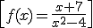
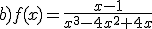

Si hablamos de funciones reales con variable real:
–El dominio de una función polinómica es siempre R.
Ejemplo: f(x) = 3x5 – 5x +243 Dom f = R
–Tenemos que eliminar las raíces del denominador de una función racional de su dominio.
Ejemplo:
 Dom f = R – {-2,2}
–El dominio de una función irracional f(x) = √R(x) es Dom f = {x,R(x)≥ 0}
Ejemplo: f(x) = √(x2 – 3x + 2)
Dom f = (-∞,1]U[2,∞)
–El dominio de una función logarítmica f(x) = loga L(x) es Dom f = {x,L(x)> 0}
Ejemplo: f(x) = ln(7x – 21)
Dom f = (3,∞)
Ejercicio. Averigua el dominio de estas funciones:
a) f(x) = ln(x2-3x + 2)

Soluciones: a) (-∞,1)U(2,∞); b) R-{0,2}